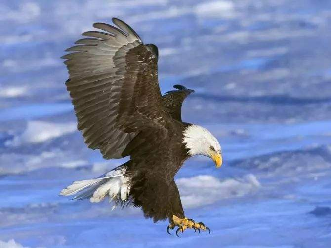
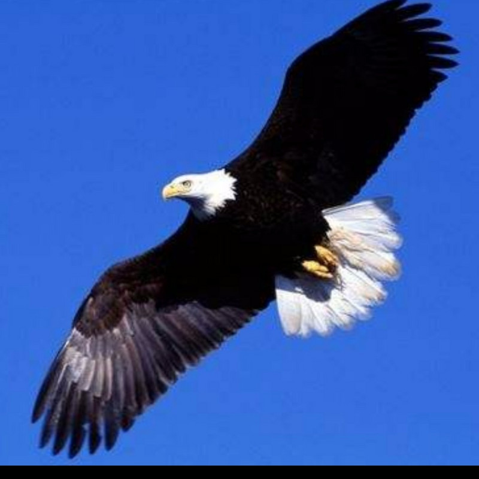
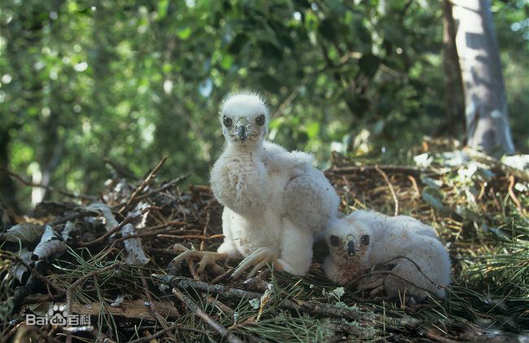
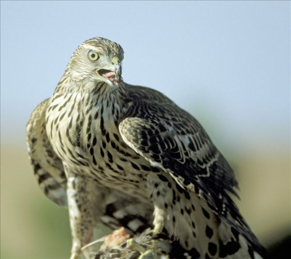

苍鹰成鸟前额、头顶、枕和头侧黑褐色，颈部羽基白色；眉纹白而具黑色羽干纹；耳羽黑色；上体到尾灰褐色；飞羽有暗褐色横斑，内翈基部有白色块斑，初级飞羽第4枚最长，4-5枚，第2-6枚外翈有缺刻，第1-5枚内翈有缺刻。尾灰褐色，具3-5道黑褐色横斑。喉部有黑褐色细纹及暗褐色斑。胸、腹、两胁和覆腿羽布满较细的横纹，羽干黑褐色。肛周和尾下覆羽白色，有少许褐色横斑。虹膜金黄或黄色，蜡膜黄绿色；嘴黑基部沾蓝；脚和趾黄色；爪黑色；跗蹠前后缘均为盾状鳞。
雌鸟羽色与雄鸟相似，但较暗，体型较大。亚成体上体都为褐色，有不明显暗斑点。眉纹不明显；耳羽褐色；腹部淡黄褐色，有黑褐色纵行点斑。幼鸟上体褐色，羽缘淡黄褐色；飞羽褐色，具暗褐横斑和污白色羽端；头侧、颏、喉、下体棕白色，有粗的暗褐羽干纹；尾羽灰褐色，具4-5条比成鸟更显著的暗褐色横斑。
大小量度：体重♂500-800克，♀650-1100克；体长♂467-576mm，♀539-600mm；嘴峰♂19-22mm，♀23-25mm；翅♂292-338mm，♀295-377mm；尾♂215-265mm，♀244-285mm；跗蹠♂61-74mm，♀64-80mm。（注：♂雄性；♀雌性）
苍鹰是森林中肉食性猛禽。视觉敏锐，善于飞翔。白天活动。性甚机警，亦善隐藏。通常单独活动，叫声尖锐洪亮。在空中翱翔时两翅水平伸直，或稍稍向上抬起，偶尔亦伴随着两翅的煽动，但除迁徙期间外，很少在空中翱翔，多隐蔽在森林中树枝间窥视猎物，飞行快而灵活，能利用短圆的翅膀和长的尾羽来调节速度和改变方向、在林中或上或下，或高或低穿行于树丛问，并能加还飞行速度在树林中追捕猎物，有时也在林缘开阔地上空飞行或沿直线滑翔，窥视地面动物活动，一旦发现森林中的鼠类、野兔、雉类、榛鸡、鸠鸽类和其他中小形鸟类的猎物，则迅速俯冲，呈直线追击，用利爪抓捕猎获物。它的体重虽然比等中型猛禽要轻五分之一左右，但速度要快3倍以上，伸出爪子打击猎物时的速度为每秒钟22.5米，所以捕食的特点是猛、准、狠、快，具有较大的杀伤力，凡是力所能及的动物，都要猛扑上去，用一只脚上的利爪刺穿其胸膛，再用另一只脚上的利爪将其腹部剖开，先吃掉鲜嫩的心、肝、肺等内脏部分，再将鲜血淋漓的尸体带回栖息的树上撕裂后啄食。
中国主要为夏候鸟和冬候鸟，在中部和东部地区多为过路鸟。迁徙时间春季在3-4月，秋季在10-11月。
筑巢
苍鹰4月下旬迁到中国东北地区。活动范围较广，但活动隐蔽。若见到在天空成对翻飞，相互追逐，并不断鸣叫，表明此时配对已完成。选择在林密僻静处较高的树上筑巢。常利用旧巢，巢材为新鲜桦树、糠椴及山榆和枝叶及少量羽毛。产卵后仍修巢。出雏后，修巢速度随雏鸟增长而加快。
产卵
产卵最早见于4月末，有的在5月中旬。隔日1枚，窝卵数3-4枚。卵椭圆形，尖、钝端明黑，浅鸭蛋青色。孵化由雌鸟担任。产孵期间，随卵数增加，雌鸟离巢时间逐渐减少。产完3-4枚卵后，日离巢次数仅1次。雌鸟整日卧于巢内，不鸣叫，也很少抬头。雄鸟除捕食外，多在附近栖落，当有乌鸦、喜鹊经过时则抬头瞭望，偶尔在巢上空盘旋，不鸣叫。
孵化
孵化前期（第8天）、中期（第18天）和后期（第28天）做了日周期观察。全卧多出现于早晨、晚上及下雨等气候较冷的时候。抬头半卧孵化则在气温较高时。气温高时，雌鸟不时张嘴、搧翅。孵化期身体位置相对稳定，变化很少。孵化期30-33天。
育雏
雌、雄鸟共同育雏，以雌鸟为主。雄鸟主要是警戒。中期送枝次数增加。后期以送食为主。巢在后期已成平盘状，巢外径58×96厘米，内径50×69厘米，高38厘米。育雏期35-37天。可知前期以暖雏为主，日捕食次数12次，取枝2次。后期不暖雏，多在巢周栖落，时间长达11小时。雌在育雏期暖雏随雏鸟生长而减少，离巢时间随雏鸟生长而增加。随暖雏停止，修巢亦告结束。前期喂食以撕小块、条喂为主，后渐为撕大块自食至不撕喂而且雏鸟自食。
雏鸟刚出壳的雏鸟被白色绒羽。眼睁开，虹膜灰褐色。嘴铅灰色，卵齿长棱形，白色，跗蹠部及爪灰白色。7.5日龄能大声单音鸣叫，以跗蹠部坐立。背、头绒毛棕灰色，基部白色。羽区毛囊明显。爪黑色。13.5日龄可单音连续鸣叫，能站立。背羽羽鞘放缨，羽片褐色。嘴黑色，蜡膜淡黄色。19.5日龄站立行走自如。初级飞羽、肩、背两侧、后头颈、朡、两胁部正羽均放缨，白色与棕黑色相间。小翼羽亦放缨。羽缘淡棕色，羽瓣黑色。眼先黑色，有针状毛。27.5日龄，雏鸟在巢内常活动，不时搧翅，昂首，时常走到巢的边缘。可自行撕取食物。卵齿消失。通体以褐色为主，羽干纹黑色，尖端褐色，背羽干黑色。腹部绒羽、正羽各半。尾下覆羽淡褐色，尾羽黑色，尖端渚褐色，腹面白色。跗蹠部淡黄绿色。34.5日龄，偶上巢边小枝站立。可飞翔，升降自如，栖落不稳。离巢距离在80-100米之间。不断鸣叫。头顶金黄色，绒羽已退尽，有黑褐色羽干纹，周身被正羽。背部深褐色，腹部浅褐色，具纵斑，羽干黑色，尖端淡褐钩。尾下覆羽浅褐色，尖端更淡，腹面几乎为纯白色。34.5日龄开始离巢。苍鹰雏期有吐食团的习性。食团大小0.6×2.2厘米。
苍鹰雏鸟生长迅速，体重18.5日龄出现一个高峰，可达433克，为出生时的15.75倍。后体重下降，至24.5日龄近最低点，之后逐渐增加，至出飞时已达460克，为出生时的16.72倍，平均日增生12.54克左右。体长增长3.95倍，日增长7.2毫米左右。翅长18.5日龄前生长较慢，后生长迅速，至30.5日龄达高峰，后减慢。跗蹠部15.5日龄前生长迅速，其后缓慢。嘴长9.5日龄后生长明显减慢。9.5日龄长出。尾缨放出前体重、体长生长迅速。其后翅、翅缨和尾缨生长迅速。苍鹰嘴长、跗蹠主长要在前期和中期生长。而翅长、尾长为中、后期生长。18.5日龄时生长单位以嘴长为最大，次为跗蹠长、体长、尾长及体重，以翅长为最小。雏鸟的食物以鼠类为主，约占47%，鸟类占38%，其他如蛇类等占15%。
世界
原产地：阿尔巴尼亚、安道尔、亚美尼亚、奥地利、阿塞拜疆、白俄罗斯、比利时、不丹、波斯尼亚和黑塞哥维那、保加利亚、加拿大、中国、克罗地亚、塞浦路斯、捷克共和国、丹麦、爱沙尼亚、芬兰、法国、格鲁吉亚、德国、直布罗陀、希腊、匈牙利、印度、伊朗伊斯兰共和国、伊拉克、爱尔兰、以色列、意大利、日本、约旦、哈萨克斯坦、韩国、朝鲜、科威特、吉尔吉斯斯坦、老挝人民民主共和国、拉脱维亚、黎巴嫩列支敦士登、立陶宛、卢森堡、马其顿、墨西哥、摩尔多瓦、蒙古、黑山、摩洛哥、缅甸、尼泊尔、荷兰、挪威、巴勒斯坦、波兰、葡萄牙、罗马尼亚、俄罗斯联邦、圣皮埃尔和密克隆、沙特阿拉伯、塞尔维亚、斯洛伐克、斯洛文尼亚、西班牙、瑞典、瑞士、阿拉伯叙利亚共和国、塔吉克斯坦、泰国、土耳其、土库曼斯坦、乌克兰、英国、美国、乌兹别克斯坦、越南。
旅鸟：阿富汗、阿尔及利亚、孟加拉国、百慕达、埃及、利比亚、阿曼、巴基斯坦、西班牙、突尼斯、阿拉伯联合酋长国。
中国
地区：北京、天津、河北、山西、内蒙古、辽宁、吉林、黑龙江、上海、安徽、江西、浙江、山东、河南、湖北、湖南、广东、广西、四川、贵州、云南、西藏，陕西、甘肃、宁夏、新疆、台湾、香港。
保护区：松山（北京）、武夷山（福建）、豫北黄河故道湿地、布尔根河狸、托木尔峰、鼎湖山、湛江红树林、董寨鸟类保护区、济源、鸡公山、洪河、凉水、兴凯湖、九宫山、后河、东洞庭湖、长白山、向海、大丰麋鹿保护区、鄱阳湖、武夷山（江西）、双台河口、老秃顶子、白石砬子、荣成天鹅湖、天龙山、庞泉沟、芦芽山、绵山、历山、王朗、卧龙自然保护区、金佛山、阿尔金山、甘家湖梭梭林、清凉峰、瓦屋山、南洞庭湖湿地和水禽保护区、衡水湖湿地和鸟类保护区、赛罕乌拉、小溪、黄河三角洲、额济纳胡杨林、罗布泊。
山脉湖泊：子午岭山、长白山、大别山、小兴安岭、太行山、清凉峰、祁连山、天山、准噶尔盆地、塔里木盆地、天山、阿尔泰山山地、伏牛山、准噶尔西部山地、伊犁谷地、东疆戈壁丘陵、塔河上游平原、罗布泊低地、哈纳斯湖、伊犁河、哈巴河、特克斯河谷、阿尔泰、托木尔峰南坡（琼台兰河）、那拉提。